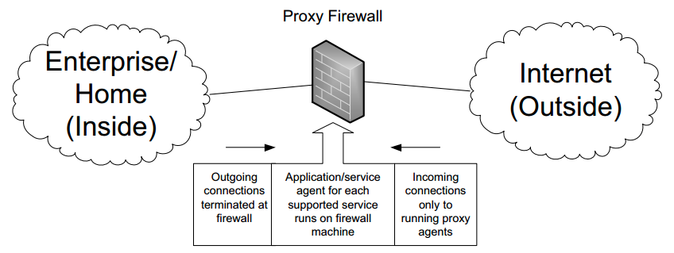

¿Que es? |
||
| Un firewall proxy es lo más cercano a una barrera física real que se puede conseguir. A diferencia de otros tipos de firewall, este actúa como intermediario entre redes externas y equipos, y evita el contacto directo entre ambos. |
 |
|
| Los servidores proxy pueden brindar funcionalidad adicional, como seguridad y almacenamiento de contenido en caché, evitando las conexiones directas desde el exterior de la red. | En este tipo de comunicación no existe una conexión directa entre el remitente y el destinatario. En ocasiones, ni el sistema al que se le hacen las peticiones ni el ordenador de destino saben que hay un proxy de por medio. | |
Ventajas |
|